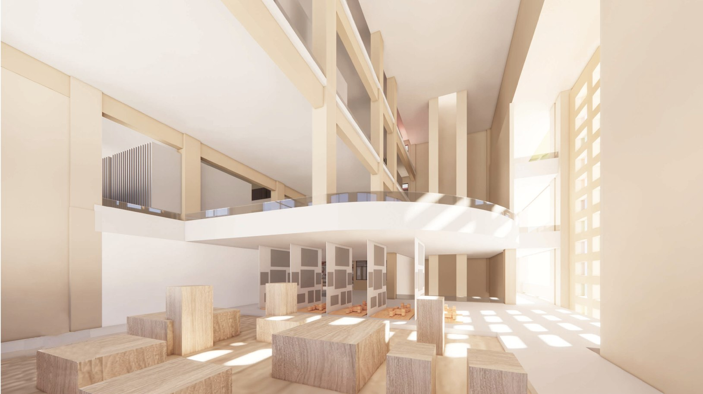
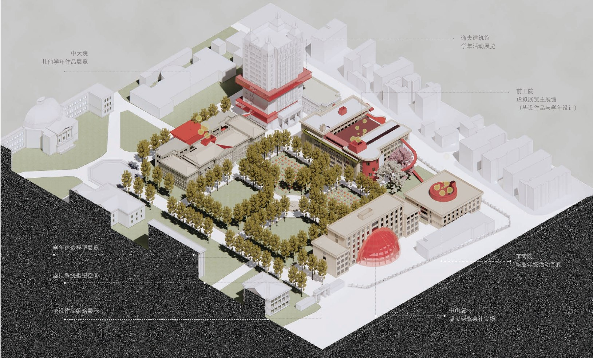
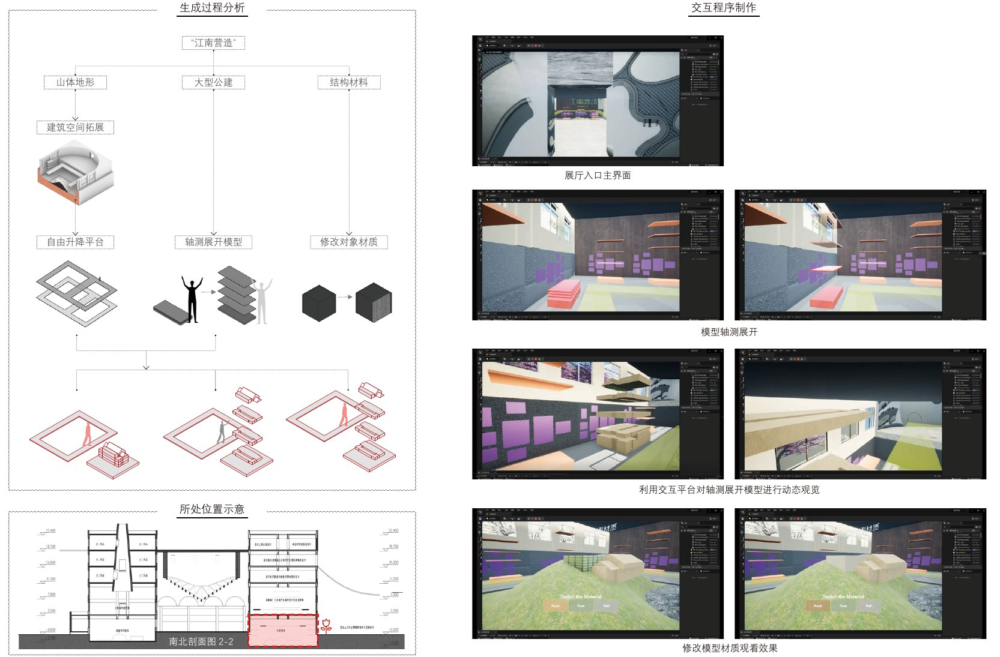
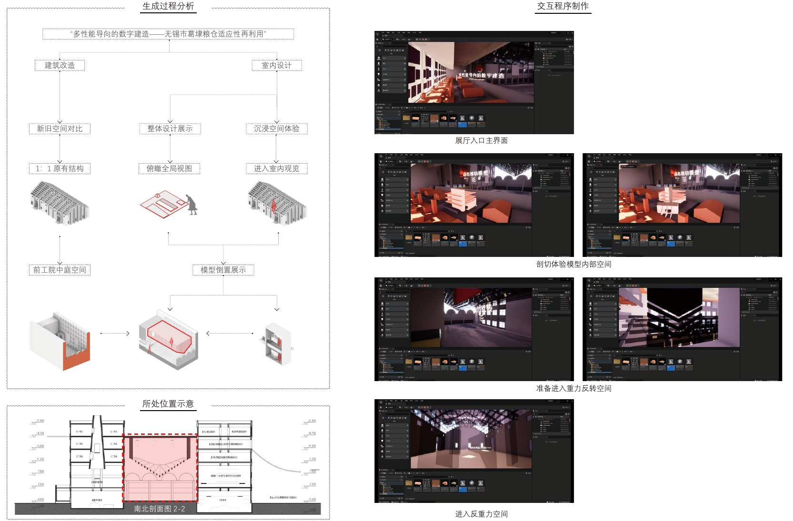
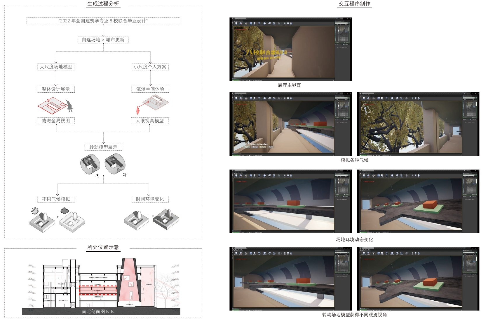
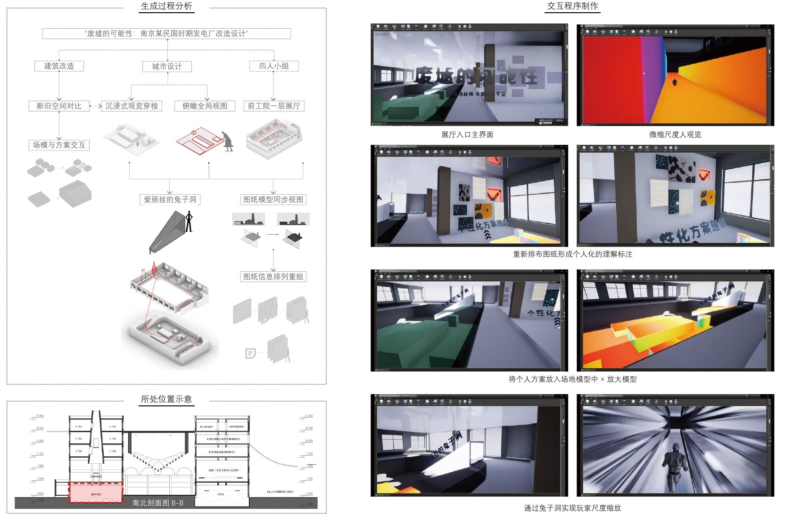
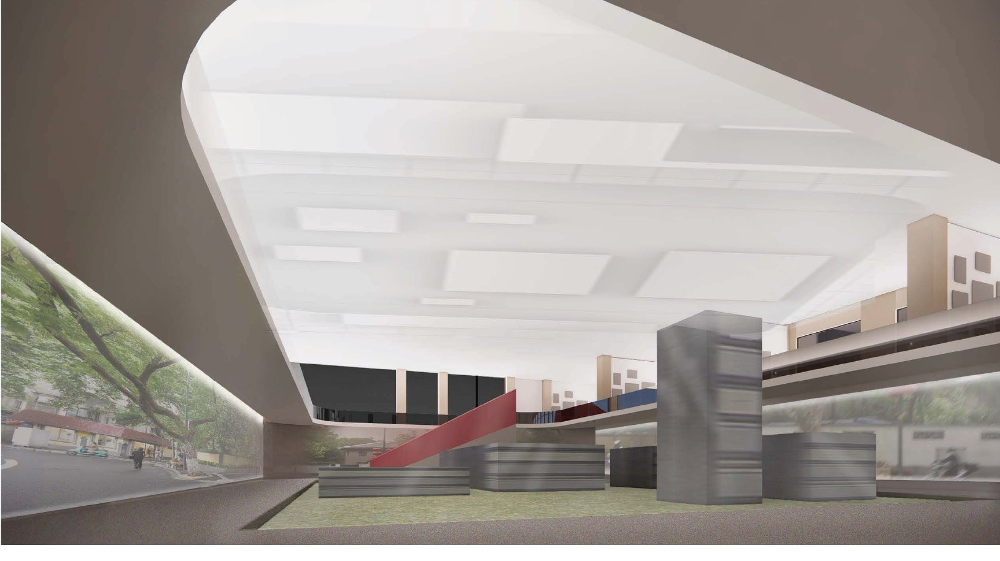

Simulating reality
Use familiar campus buildings and spatial memories to establish orientation and a sense of place.
模拟现实·超越现实·融合现实——基于交互引擎和XR技术的交互式三维虚拟展厅设计——以建筑学院学年作品交互展示系统原型为例
An interactive 3D virtual exhibition hall using game engines and XR technologies, developed through a prototype system for displaying annual student work at the School of Architecture.

Developed in response to the shift toward online architecture exhibitions during the pandemic, this thesis asks how a virtual exhibition can support free exploration and a sense of spatial presence. A review of 100 architecture-school exhibitions from 2020–2021 informed the design, examining the limits of static webpages and predetermined viewing routes.
The proposal reinterprets Southeast University’s Sipailou campus as a connected exhibition environment. Rather than treating student work as isolated images, it brings drawings, models, sites and visitors into a shared spatial framework.
Use familiar campus buildings and spatial memories to establish orientation and a sense of place.
Explore changes in gravity, scale, viewpoint and time to reveal architecture beyond the limits of a physical exhibition.
Connect drawings and models with their sites, and explore XR interfaces between campus life and virtual exhibitions.
The system is designed across three spatial scales: the campus network, the exhibition building and the individual exhibit. The Former Engineering Institute (Qiangongyuan / 前工院) becomes the main virtual hall for graduation and annual student work, while other campus nodes accommodate exhibitions, cohort memories and a proposed virtual graduation ceremony.

Navigation combines the continuity of a museum route with the direct access of a web index. Visitors can follow a spatial sequence or select a thumbnail model on the central lawn to jump to a building or project. Within the hall, vertical circulation and changing environmental conditions create connections between otherwise separate exhibitions.
Four selected design studios become distinct exhibition prototypes. Each pairs a particular architectural question with an interaction that helps visitors examine it.
A mountain-site model extends below the exhibition floor. An exploded model and a freely moving viewing platform let visitors inspect individual levels, while material switching reveals different readings of the structure.
Exploded models · Vertical viewing · Material switching

For the adaptive reuse of a grain warehouse in Wuxi, an inverted building model occupies the atrium. Reversing gravity takes the visitor into a full-scale interior, connecting an overview of the old and new structures with an embodied spatial experience.
Gravity reversal · Full-scale exploration

Urban-renewal proposals along Shanghai’s Huaihai Road are embedded in a shared linear site model. Rotating the site between eye-level and bird’s-eye views, and changing daylight, weather and seasons, allows visitors to examine each proposal within its urban context.
Shared urban context · Viewpoint rotation · Environmental change

A former power-plant reuse project in Nanjing connects before-and-after models with drawings that visitors can rearrange. An Alice-inspired change of scale shrinks the avatar, allowing a miniature architectural model to become a walkable environment.
Drawing arrangement · Model comparison · Avatar scaling

The winter gallery makes the change of scale tangible: a model normally viewed from outside becomes an environment experienced from within. This shift captures the project’s central idea that exhibition space can actively shape how architecture is understood.

The workflow moves from exhibition research and system planning to spatial design, curation, real-time implementation and experience iteration. Unreal Engine and Blueprint visual scripting connect camera modes, character behavior, environmental events and exhibit actors. Drawings, axonometric representations, three-dimensional models and video are coordinated through navigation, selection and interaction.
Explode, move and rotate models; switch materials; compare proposals; reorganize drawings; and insert individual designs into a common site.
Change between first-person, third-person and bird’s-eye views; alter avatar scale and gravity; and vary weather, seasons and time of day.
The documented outcome is a campus-scale design proposal with selected spatial nodes and four developed exhibition examples. AR interfaces and broader online–offline integration remain directions for further development.
The thesis explores how architectural design knowledge can inform virtual spaces with their own spatial rules. Its contribution lies in pairing exhibition content with purposeful interactions, instead of simply reproducing a physical gallery. The manual also acknowledges limits in development time, equipment and technical scope; the wider campus system and individual interactions require further refinement.
Images and project descriptions are drawn from the 2022 thesis design manual, especially pp. 13, 24–28, 32–43, 50–63 and 67. Select any figure to view it at full size.